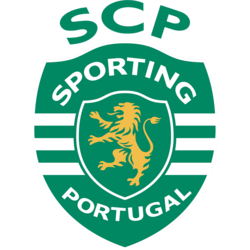
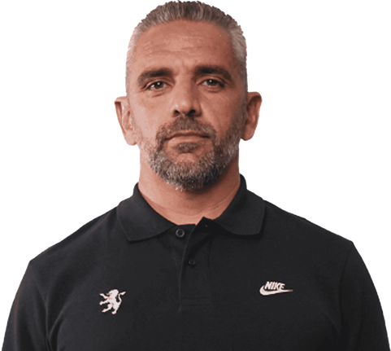
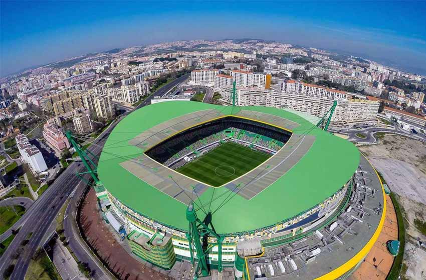

Treinador: Rui Borges
A trajetória de Rui Borges é definida por uma ascensão meteórica assente na competência tática e na valorização do jogo positivo, afirmando-se como um treinador de perfil audaz e de vincada capacidade de potenciar o talento individual em prol do coletivo.

Estádio: José Alvalade
O Estádio José Alvalade ergue-se como um expoente da modernidade leonina, pautado por uma arquitetura arrojada e uma atmosfera de comunhão intergeracional, afirmando-se como um recinto de perfil vanguardista, místico e de vincada identidade verde e branca.

Estilo de Jogo:
Desde que assumiu o Sporting Clube de Portugal em dezembro de 2024, Rui Borges tem implementado um estilo de jogo que marca uma rotura com o sistema de três centrais, focando-se num futebol mais vertical, agressivo e de grande intensidade física.
"Onde Vai Um, Vão Todos!"